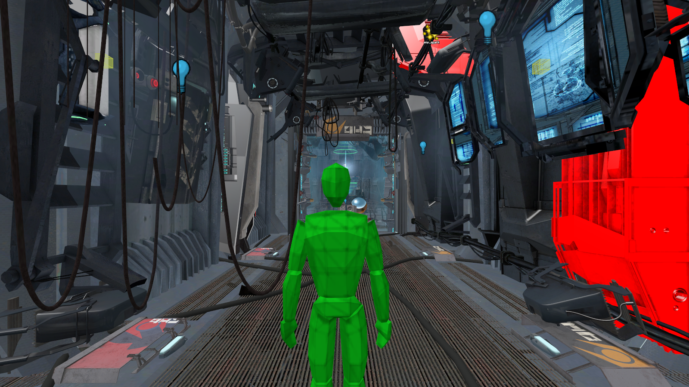

NoDraw
NoDraw
NoDraw — высокопроизводительный нативный 64-битный редактор карт для движка Source Engine и платформы Garry's Mod, написанный с нуля на языке Rust с использованием графического API WebGPU (wgpu).
Редактор спроектирован как полноценная замена и прямой преемник Hammer++ и оригинального Valve Hammer Editor. Главная цель проекта — полное избавление от устаревшего 32-битного MFC-кода конца 1990-х годов, исключение случайных вылетов при работе со сложными сценами и внедрение современных инструментов левел-дизайна: физически корректного превью-света, сглаженного трафаретного выделения объектов, точного парсинга коллизий и встроенной упаковки контента.
gameinfo.txt и списки монтирования mount.cfg. Редактор не требует замены системных DLL игры или внедрения инжекторов.
- 1 Архитектура и Концепция
- 2 Рабочий интерфейс редактора
- 3 Подробное описание всех нововведений
- 3.1 Честный физический свет: Halton 162-ray Lightbake
- 3.2 Субпиксельный Stencil Silhouette Outline
- 3.3 Парсер коллизий .PHY и фильтрация рёбер
- 3.4 Бесшовный 2D-скайбокс (MSE = 0.0)
- 3.5 Корректный рендер спрайтов и иконок энтити
- 3.6 Режим мгновенного осмотра Playtest (F6)
- 3.7 Встроенная упаковка контента Lump 40 (Замена VIDE)
- 3.8 Инструмент Propper с компиляцией StudioMDL
- 3.9 Parallax-Corrected Cubemaps (BPCEM)
- 4 Сравнение с Hammer++
- 5 Горячие клавиши NoDraw
- 6 Превью рендеров карт
- 7 Установка и пакет для тестеров
 1. Архитектура и Концепция
1. Архитектура и Концепция
Оригинальный Valve Hammer Editor создавался под Windows 95/98 на базе библиотек MFC (Microsoft Foundation Classes). Даже в модификации Hammer++ редактор упирается в ограничения 32-битного адресного пространства (максимум 3.5 ГБ оперативной памяти), частые краши при работе со сложными мешами и фиксированный конвейер OpenGL 2.x.
Фундаментальные отличия NoDraw:
- Память и надежность: 100% безопасная работа с памятью на Rust. Ошибки сегментации, переполнения буфера при манипуляции вертексами брашей и повреждения кучи исключены на уровне компилятора.
- Современный графический стек: Движок рендеринга на WebGPU задействует низкоуровневые очереди команд Vulkan / DirectX 12. Это обеспечивает стабильные 60+ FPS на сценах с сотнями тысяч полигонов и десятками тысяч динамических пропов.
- Непрерывная история правок (Undo/Redo): Вся сцена изолирована в системе транзакций. Каждая операция (от перемещения одного вертекса до массивного карвинга) откатывается и накатывается мгновенно.
 2. Рабочий интерфейс редактора
2. Рабочий интерфейс редактора
Интерфейс NoDraw оптимизирован для максимальной концентрации на геометрии карты:

- Панель инструментов слева: Быстрый выбор ключевых режимов — Select, Zoom, Camera, Block, Polygon, Mesh, Clip, Disp, Path, Entity, Decal, Overlay, Sprinkle, Drop, Face, Apply.
- Инспектор справа (Tool / Properties / Details): Управление объектами (Displacements, Brushes), булевы операции (Carve, Hollow, Clip, Merge, To entity, To disp), параметры привязки и режим Gizmo.
- Проводник ассетов снизу (Assets Explorer): Индексация десятков тысяч материалов (VMT), моделей (MDL), звуков и частиц. Мгновенный поиск, просмотр текстур и наложение на грани в один клик.
 3. Подробное описание всех нововведений
3. Подробное описание всех нововведений
3.1. Честный физический свет: Halton 162-ray Lightbake
В NoDraw полностью исключены упрощённые хаки аппроксимации освещения. Вместо этого встроен честный физический расчет непрямого света:
- 162 квазислучайных луча Халтона (Halton 2, 3): Для каждой вершины модели просчитывается полусфера отраженного света и неба.
- Спад точечных источников света (Spotlight/Point): Расчет по квадратичной формуле Source SDK 2013
ComputeLightAtPointsс плавным косинусным переходом между_inner_coneи_cone. - Строгий LDR-пайплайн: Никаких кислотных искажений или искусственного высветления теней. Честный контраст, полностью соответствующий финальной компиляции VRAD.
 3.2. Субпиксельный Stencil Silhouette Outline
3.2. Субпиксельный Stencil Silhouette Outline
Одной из главных проблем Hammer++ была загромождающая паутина проволоки поверх выделенных пропов, из-за которой невозможно было оценить освещение и текстуру модели:
- Двухпроходный Stencil-пайплайн: Выделенные пропы рендерятся в маску силуэта формата
R8Unorm. - 12-точечный радиальный фильтр сглаживания: Шейдер находит внешнюю границу силуэта и накладывает параболическую функцию альфы. Контур выделения получается идеально гладким на любых закруглениях без пиксельных ступенек.
- Чистые браши: Браши отображаются строгим жёлтым каркасом рёбер и полупрозрачной красной гранью по канону Hammer++, не засоряя трафаретную маску.
 3.3. Парсер коллизий .PHY и фильтрация рёбер
3.3. Парсер коллизий .PHY и фильтрация рёбер
Геометрия физических моделей Source Havok/IVP теперь визуализируется с математической точностью:
- Устранение поворота на 90 градусов: Исправлена формула трансформации координат
ivp_to_sourceна[p[2]*M, -p[0]*M, -p[1]*M]. Коллизии больше не смещаются относительно визуала. - Фильтрация копланарных рёбер (
collision_hull_lines): Алгоритм вычисляет нормали смежных треугольников выпуклых частей. Если угол между ними менее 10° (скалярное произведение > 0.985), внутреннее диагональное ребро скрывается. Отображается только чистый внешний каркас физического бокса.
 3.4. Бесшовный 2D-скайбокс (MSE = 0.0)
3.4. Бесшовный 2D-скайбокс (MSE = 0.0)
Все 6 граней скайбокса (_rt, _lf, _bk, _ft, _up, _dn) согласованы по канонической математической развёртке кубмап WebGPU. Ликвидированы артефакты пирамидального замятия в зените и темные полосы на горизонте по всем картам.
3.5. Корректный рендер спрайтов и иконок энтити
Шейдеры спрайтов (Sprite, SpriteCard, иконки источников света light, env_sprite) переведены в честный режим Unlit + Translucent. Снято нелинейное искажение гаммы альфа-канала, полностью устранены чёрные непрозрачные квадраты вокруг ламп.
 3.6. Режим мгновенного осмотра Playtest (F6)
3.6. Режим мгновенного осмотра Playtest (F6)
Больше нет необходимости запускать игру через F9, чтобы оценить масштабы коридоров:
- Нажатие F6 активирует режим ходьбы от первого лица с гравитацией, шагами и прыжками на Space.
- Клавиши V и N мгновенно переключают в свободный noclip-полёт со скоростью до 800 юнитов в секунду на Shift.
 3.7. Встроенная упаковка контента Lump 40 (Замена VIDE)
3.7. Встроенная упаковка контента Lump 40 (Замена VIDE)
NoDraw содержит полноценный модуль инъекции файлов в Lump 40 (Pakfile) скомпилированного BSP:
- Автоматический рекурсивный сбор всех VMT-материалов, текстур VTF (включая normal map и diffuse), моделей MDL/VVD/VTX/PHY, звуков и частиц.
- Поддержка ручного списка Extra Files (файлы конфигураций, скрипты саундскейпов) с сохранением в
<map>.nodraw_pack.json.
 3.8. Инструмент Propper с компиляцией StudioMDL
3.8. Инструмент Propper с компиляцией StudioMDL
Удобный диалог преобразования брашевых конструкций в статическую 3D-модель (prop_static):
- Настройки имени модели, папки назначения, surfaceprop (дерево, металл, бетон), массы и угла сглаживания нормалей.
- Генерация выпуклых коллизий (
$concave) и автоматический вызов StudioMDL из установленной копии игры.

3.9. Parallax-Corrected Cubemaps (BPCEM)
Автоматический расчет габаритов комнат (AABB) трассировкой лучей от каждой энтити env_cubemap до стен. Формирует метаданные Box-Projected Cubemaps, благодаря чему отражения в Garry's Mod не плавают в бесконечности, а точно соответствуют геометрии помещения.
 4. Сравнение с Hammer++
4. Сравнение с Hammer++
| Характеристика | Hammer++ | NoDraw |
|---|---|---|
| Ядро и язык | MFC / C++ 2003 (32/64-bit устаревший API) | Rust + WebGPU (нативная безопасность памяти) |
| Выделение силуэта пропов | 1-пиксельная ступенчатая маска | 12-точечный радиальный Subpixel Anti-Aliasing |
| Коллизии моделей .PHY | Паутина диагоналей на плоских гранях | Интеллектуальная фильтрация копланарных рёбер |
| Превью освещения | Упрощённое OpenGL / ожидание VRAD | 162-лучевой Halton превью в реальном времени |
| Упаковка в BSP (Pack) | Требуется сторонний VIDE / Pakrat / bspzip | Встроенный Lump 40 упаковщик в один клик |
| Осмотр карты | Только полный запуск игры через F9 | Мгновенный Playtest F6 с noclip прямо в окне |
| Швы 2D-скайбокса | Периодические пирамидальные замятия | Математическая непрерывность (MSE = 0.0) |
 5. Горячие клавиши NoDraw
5. Горячие клавиши NoDraw
| Сочетание клавиш | Действие в редакторе |
|---|---|
| F6 | Включение / выключение режима мгновенного Playtest |
| V / N | Переключение Noclip-полёта во время Playtest |
| Ctrl + Alt + G | Переход по координатам (поддержка строк setpos / setang) |
| Ctrl + G | Группировка выбранных объектов |
| Ctrl + U | Разгруппировка выбранной группы |
| Alt + S | Режим правки 3D-скайбокса на месте (1:1 масштаб) |
| Esc | Экстренная остановка фоновой компиляции карты |
| Ctrl + O | Открыть файл карты (.vmf / .bsp) |
| Ctrl + S | Сохранить карту |
 6. Превью рендеров карт
6. Превью рендеров карт
Реальные рендеры в NoDraw без использования временных тестов (нажмите для увеличения):



7. Установка и пакет для тестеров
NoDraw поставляется в виде готового автономного ZIP-пакета. Редактор не вносит изменений в реестр системы и не требует прав администратора.
| Характеристики тестерского архива | |
|---|---|
| Имя архива | nodraw-beta-tester.zip |
| Размер файла | 19.66 МБ (ZIP, максимальное сжатие) |
| Дата сборки | 03.11.2026 |
| Состав пакета | NoDraw.exe (Release x64), папка icons/ (1154 иконки), plugins/, README.txt |
| Ссылка на загрузку | |
Инструкция по быстрому запуску:
- Скачайте архив
nodraw-beta-tester.zipи распакуйте в любую папку (например,D:\NoDraw\). - Убедитесь, что папка
icons/находится рядом сNoDraw.exe. - Запустите
NoDraw.exe. - Редактор автоматически найдет установленный Garry's Mod и библиотеки Steam. Если игра расположена в нестандартной папке, укажите её через меню Settings → Game Folder.
- Откройте карту: Ctrl + O или просто перетащите файл
.vmfв окно программы.